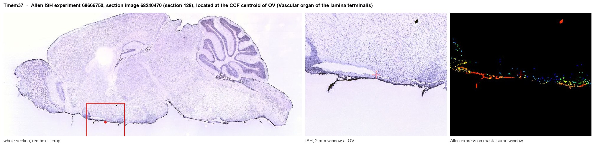
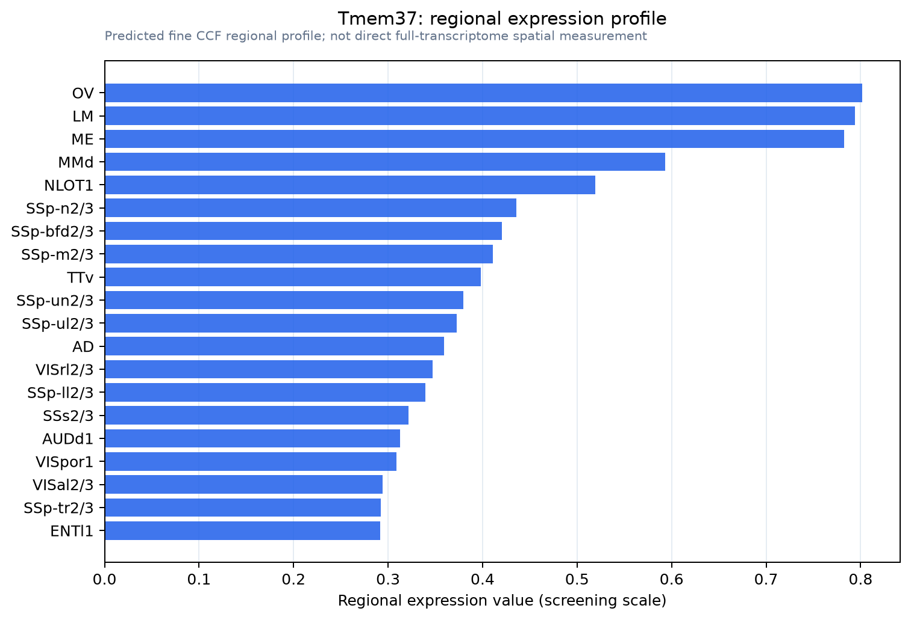

Tmem37
Voltage-dependent calcium channel gamma-like subunit (Neuronal voltage-gated calcium channel gamma-like subunit) (Transmembrane protein 37)
Spatial tier: REGION_BIASED · Class: ION_CHANNEL · Top region: OV (Vascular organ of the lamina terminalis) · Positive regions: 50/554
Function in OV: evidence, prediction, innovation
- Gene function
- TMEM37 is a small two-transmembrane protein classified as a voltage-dependent calcium channel gamma-like subunit. It is not a pore-forming channel; like other gamma subunits it associates with calcium channel complexes and is reported to modulate T-type/low-voltage-activated calcium currents and channel trafficking. Its physiology remains poorly defined in any tissue.
- Region function
- The vascular organ of the lamina terminalis (OVLT) is a sensory circumventricular organ lacking a blood-brain barrier; its glutamatergic osmosensitive neurons detect plasma hypertonicity and drive thirst, vasopressin release and sympathetic/thermoregulatory responses through the SFO-MnPO-PVN network.
- Published in this region
- none No region-specific literature found. There is essentially no primary literature on TMEM37 in brain at all; the closest relevant biology is that low-voltage-activated calcium currents shape the burst firing of lamina terminalis osmosensory neurons that drive thirst.
- Predicted function
- Prediction: in OVLT neurons TMEM37 would act as an auxiliary subunit that tunes T-type calcium current amplitude and therefore rebound bursting, the firing mode by which osmosensory neurons convert a sustained tonicity signal into a graded drive to downstream MnPO and PVN targets. Knockdown should reduce low-threshold spikes and flatten the relationship between plasma osmolality and OVLT firing rate, predicted to raise the osmotic threshold for drinking and delay water intake after salt loading without changing satiety-related drinking termination.
- Innovation
- ★★★★★ 5/5 A near-orphan calcium channel auxiliary subunit in the brain's primary osmosensor, with no published brain work whatsoever.
- Tools
- None known for TMEM37 specifically; approach via AAV-shRNA/CRISPR knockdown in OVLT, T-type blockers TTA-P2 or mibefradil as pharmacological context, and Slc17a6-Cre for neuron-specific targeting.
- References
Direct evidence located at the region

Allen ISH experiment 68666750, section image 68240470 (section 128): the section that contains the CCF centroid of Vascular organ of the lamina terminalis according to the Allen image-to-atlas alignment (reference_to_image), with a 2 mm window around that point. Left: whole section, red box = window. Middle: ISH signal. Right: Allen's expression-mask view of the same window. open this image in the Allen viewer
Direct spatial evidence

Regional expression figure

Predicted WMB × fine-CCF profile; not direct full-transcriptome spatial measurement.
Spatial profile
Evidence and specificity
- Evidence status
- PREDICTED_FINE
- Direct sources
- None; predicted localization only
- Exclusive threshold
- 12 positive regions out of 554
- Spatial specificity
- 0.281
- Top-region fraction
- 0.041
- Filter status
- PASS
Interpretation limits
- Cell-type-to-region projection is imputed expression, not direct spatial measurement.
- Adult reference atlases do not establish stability across age, sex, strain, state, or disease.
- Transcript abundance does not guarantee protein abundance or genetic-tool performance.